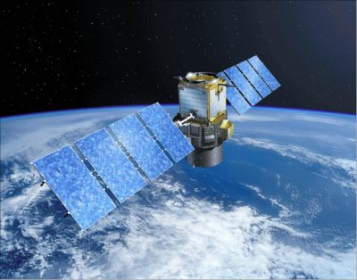
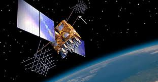

INFORMATION ABOUT GSAT SATELLITE
Weather forecasting : GSAT satellites support weather forecasting services.
Navigation: Some GSAT satellites, like GSAT-10, carry a GPS Aided GEO Augmented Navigation (GAGAN) payload that improves the accuracy of GPS satellite positioning information.
Disaster management : GSAT satellites support disaster warning and search and rescue operations.

INFORMATION ABOUT NAVIC SATELLITE
The Navigation with Indian Constellation (NavIC) is a satellite-based navigation system that provides positioning, navigation, and timing services in India and the surrounding region.
It can be used for a variety of applications, including:
Navigation: NavIC can be used for visual and voice navigation for drivers, and as a terrestrial navigation aid for hikers and travelers.
Disaster management: NAVIC can be used for quick and accurate location tracking during emergencies.

CLICK here to go to Home screen